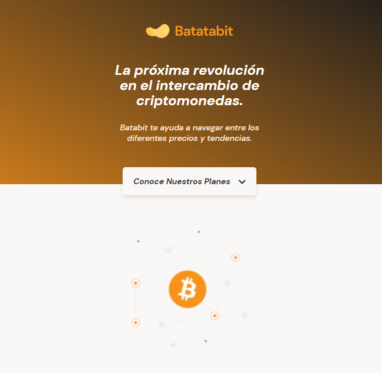
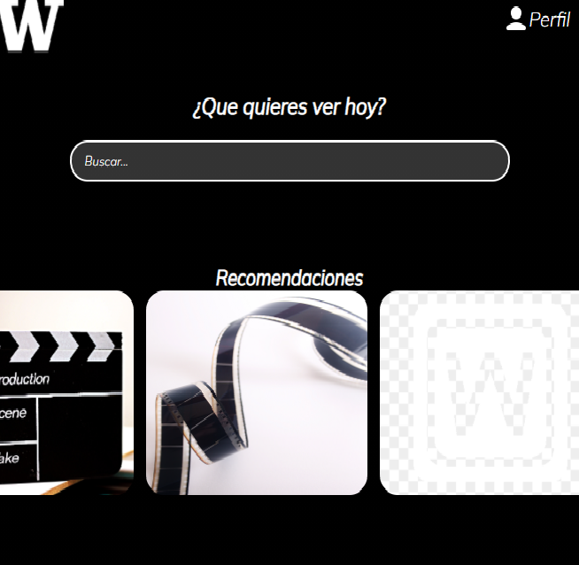
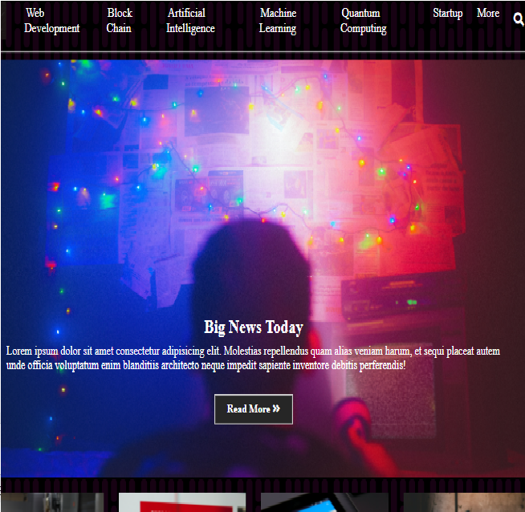
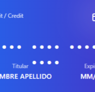

Frontend
- HTML5
- CSS3
- JavaScript ES6+
- Responsive Design
- Flexbox / Grid
- Git
Guatemala · Disponible para nuevos proyectos
Web Developer · DevOps · AI Integration
Construyo interfaces web rápidas y bien terminadas, y las llevo hasta producción con pipelines de CI/CD y contenedores. Esa misma infraestructura es la que uso para desplegar y operar cargas de Inteligencia Artificial.
Soy desarrollador web con foco en la construcción de interfaces limpias y en llevarlas hasta producción de forma automatizada. Trabajo con HTML, CSS y JavaScript como base, y me muevo hacia el backend, los contenedores y los pipelines de despliegue para cerrar el ciclo completo de una aplicación.
Cada proyecto de este portafolio está escrito y desplegado por mí. Me interesa el detalle: el rendimiento, el comportamiento en móvil, y que el código sea legible para el siguiente que lo toque.
Actualmente construyo una línea de proyectos centrados en IA: primero la infraestructura que la sostiene — CI/CD, Docker, Kubernetes, Terraform — y sobre ella los asistentes conversacionales, la automatización de procesos y la integración de modelos de lenguaje en aplicaciones web.
Las herramientas con las que trabajo día a día.
Una línea de trabajo dedicada: la infraestructura para desplegar y operar cargas de IA, y las aplicaciones web que las consumen. Los proyectos se publican aquí conforme se completan.
Chatbots conectados a APIs de modelos de lenguaje, con contexto propio y memoria de conversación.
Flujos que reducen trabajo manual: clasificación, resumen y extracción de información desde documentos.
Búsqueda semántica, sugerencias en tiempo real y generación de contenido integradas en la propia web.
Pipeline de despliegue de punta a punta
Una API en FastAPI que viaja sola desde mi editor hasta correr en Kubernetes con 3 réplicas y sin downtime. Un cambio de una línea se prueba, se empaqueta como imagen Docker, se publica en un registro y se despliega — sin tocar un servidor a mano. La infraestructura de nube se define como código con Terraform.
Es el cimiento de infraestructura sobre el que monto la capa de IA: la misma disciplina de versionar, probar y desplegar aplicada a prompts, evaluaciones y modelos (MLOps / LLMOps).
API en FastAPI con endpoints / y /salud. Todo el trabajo pasa por Git con ramas y pull requests.
pytest sobre TestClient valida respuesta y contrato JSON de cada endpoint en cada push y cada PR.
El job de build declara needs: test. Si una prueba falla, la imagen no se publica. Nunca sale código roto.
GitHub Actions construye con Buildx y cache de capas, y publica la imagen etiquetada en GHCR. Credenciales en secrets, nunca en el repo.
Deployment con 3 réplicas, readinessProbe y livenessProbe contra /salud, límites de CPU y memoria, y configuración inyectada desde un ConfigMap.
Service tipo LoadBalancer balanceando entre las réplicas, más un Ingress para el enrutamiento HTTP.
Terraform define la VPC, subred, security group e instancia EC2 en AWS. AMI resuelto dinámicamente para que el código sea portable entre regiones.
Escalado con kubectl scale y actualizaciones sin downtime con rollout restart: la readiness impide que llegue tráfico a un pod que aún no responde.
envFrom, en lugar de hornearse dentro de la imagen.terraform destroy como parte del ciclo, no como un extra: control de costos desde el primer día.Chat integrado en sitio web capaz de responder sobre el contenido del propio sitio.
Herramienta que genera y reescribe textos a partir de plantillas y parámetros del usuario.
Motor de búsqueda que entiende la intención de la consulta, no solo las palabras exactas.
Este bloque se completará con el próximo proyecto de la línea de IA.
¿Quieres seguir el avance de estos proyectos?
Seguir en GitHubTrabajos en línea. Haz clic en cualquiera para abrirlo.

Landing page de intercambio de criptomonedas. Diseño responsive mobile-first.
Ver proyecto →Réplica fiel de la interfaz de Google. Ejercicio de precisión en maquetación.
Ver proyecto →
Plataforma de video con navegación fluida y layout adaptable a móvil.
Ver proyecto →
Portal de noticias tecnológicas con estructura de contenido escalable.
Ver proyecto →
Formulario de tarjeta con validación y actualización visual en tiempo real.
Ver proyecto →jobs: test build-and-push needs: test # la compuerta replicas: 3 readinessProbe: /salud
API en FastAPI con CI/CD, imagen en GHCR y despliegue en Kubernetes con 3 réplicas. Infraestructura AWS con Terraform.
Ver repositorio →APIs y servicios en construcción. Se publicarán en este mismo espacio.
No hay proyectos publicados en esta categoría todavía.
Disponible para entrevistas, proyectos freelance y posiciones de tiempo completo.